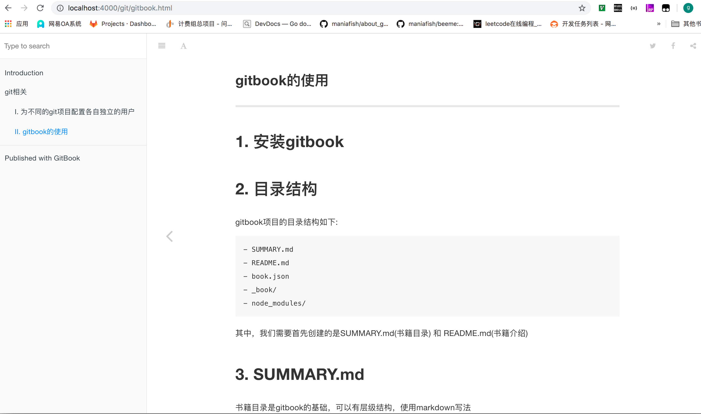
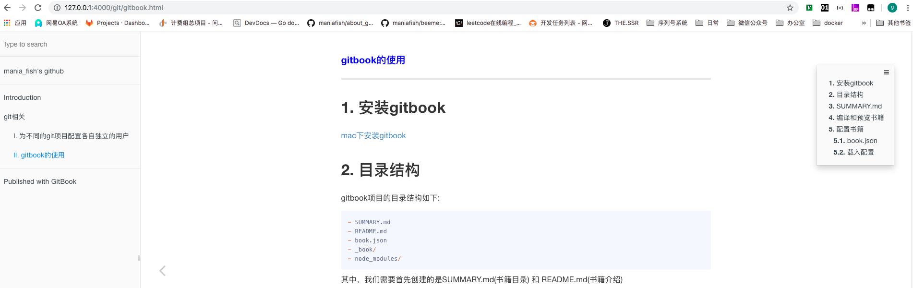
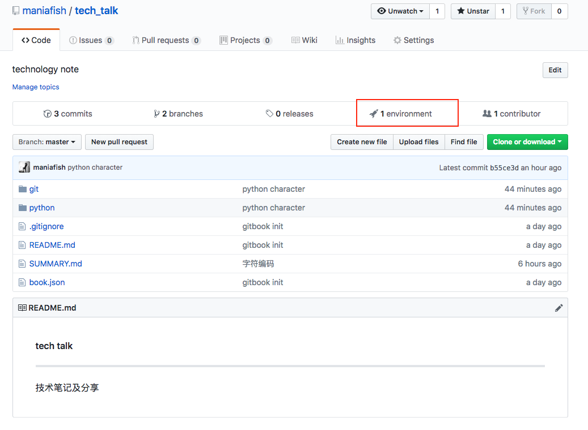
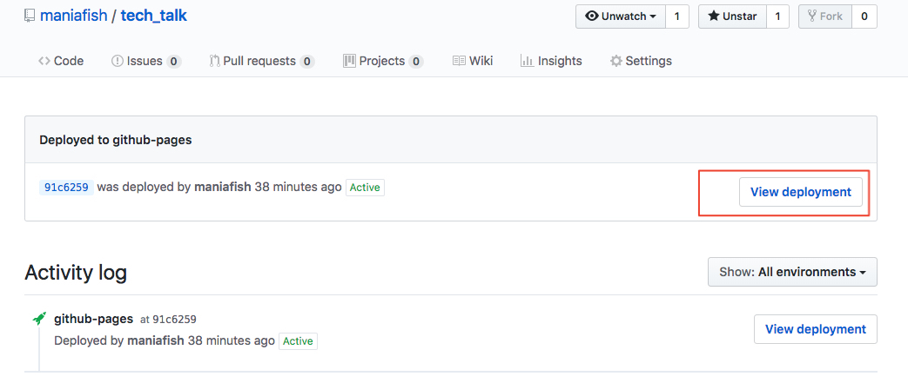
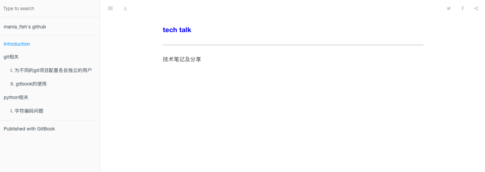

gitbook的使用
1. 安装gitbook
2. 目录结构
gitbook项目的目录结构如下:
- SUMMARY.md
- README.md
- book.json
- _book/
- node_modules/
其中，我们需要首先创建的是SUMMARY.md(书籍目录) 和 README.md(书籍介绍)
3. SUMMARY.md
书籍目录是gitbook的基础，可以有层级结构，使用markdown写法
# Summary
* [git相关](git.md)
* [I. 为不同的git项目配置各自独立的用户](./git/user.md)
* [II. gitbook的使用](./git/gitbook.md)
...
4. 编译和预览书籍
书籍目录和目录中链接的内容(*.md)文件编辑完成后，执行gitbook serve即可完成书籍的编译
$ gitbook serve
Live reload server started on port: 35729
Press CTRL+C to quit ...
info: 7 plugins are installed
info: loading plugin "livereload"... OK
info: loading plugin "highlight"... OK
info: loading plugin "search"... OK
info: loading plugin "lunr"... OK
info: loading plugin "sharing"... OK
info: loading plugin "fontsettings"... OK
info: loading plugin "theme-default"... OK
info: found 4 pages
info: found 1 asset files
info: >> generation finished with success in 0.7s !
Starting server ...
Serving book on http://localhost:4000
按照提示信息，访问本机4000端口，即可看到预览结果

执行完成后，会在项目下自动生成书籍的文件目录_book/
默认的"Introduction"页面就是README.md
5. 配置书籍
5.1. book.json
在项目目录下新建book.json文件，可以进行书籍配置；book.json示例如下:
{
"author": "mania_fish<mania_fish@163.com>",
"description": "How to build effective golang project",
"extension": null,
"generator": "site",
"links": {
"sharing": {
"all": null,
"facebook": null,
"google": null,
"twitter": null,
"weibo": null
},
"sidebar": {
"mania_fish's github": "https://github.com/maniafish"
}
},
"output": null,
"pdf": {
"fontSize": 12,
"footerTemplate": null,
"headerTemplate": null,
"margin": {
"bottom": 36,
"left": 62,
"right": 62,
"top": 36
},
"pageNumbers": false,
"paperSize": "a4"
},
"plugins": [
"-lunr",
"-search",
"search-pro",
"anchor-navigation-ex",
"splitter",
"sectionx",
"prism",
"-highlight",
"prism-themes"
],
"title": "real effective go",
"variables": {},
"pluginsConfig": {
"anchor-navigation-ex": {
"isShowTocTitleIcon": true,
"tocLevel2Icon": "fa fa-hand-o-right",
"tocLevel3Icon": "fa fa-hand-o-right",
"tocLevel4Icon": "fa fa-hand-o-right"
},
"prism": {
"css": [
"prism-themes/themes/prism-base16-ateliersulphurpool.light.css"
],
"lang": {
"flow": "typescript"
},
"ignore": [
"mermaid",
"eval-js"
]
}
}
}
- 官方配置字段说明
插件plugins
- "-lunr", "-search", "search-pro": 禁用掉gitbook默认的搜索插件，使用search-pro, 支持中文搜索
"anchor-navigation-ex": 页面章节锚点
由于前三级的标题会被自动锚点并编号，为了文章标题不被锚点，我们采用如下格式:
#### <font color="blue">标题</font> --- # 文章第一节 ## 文章第一节的第一小节效果如下:

"-highlight", "prism", "prism-themes": 禁用原代码高亮功能，使用prism代码主题
- 更多插件，详见官网
5.2. 载入配置
- 在项目目录下执行
gitbook install即可安装配置插件；安装完成后，项目下会出现一个node_modules/目录 - 然后执行
gitbook serve即可看到配置完成后的主页
6. 集成发布到github pages
6.1. 添加git仓库
- 在项目目录下执行
git init新建git仓库 git remote add origin <远端github仓库地址>添加github仓库touch .gitignore并且在里面添加以下内容*~ *.swp *.DS_Store _book/ node_modules/git add .添加文件到git版本控制git commit -m 'git init'提交变动git push origin master推送分支
6.2. 发布github pages
git clone <远端仓库地址> <目的目录>- 在<目的目录>下执行
git checkout --orphan gh-pages创建孤儿分支gh-pages git rm --cached -r .删除暂存区目录git clean -df删除未track的目录，不影响.gitignore中的文件touch .gitignore并且在里面添加以下内容*~ *.swp *.DS_Storecp -rf <源目录>/_book/* ./将生成的书籍html内容copy出来git add .git commit -m 'publish book'git push origin gh-pages推送完成后，进入github仓库主页，会多出一个
environment图标
点击
environment图标后，进入如下页面
点击
view deployment图标，即可看到发布的gitbook书籍
6.3. 后续更新github pages
- 只需执行上述6 - 9 步即可
参考链接：